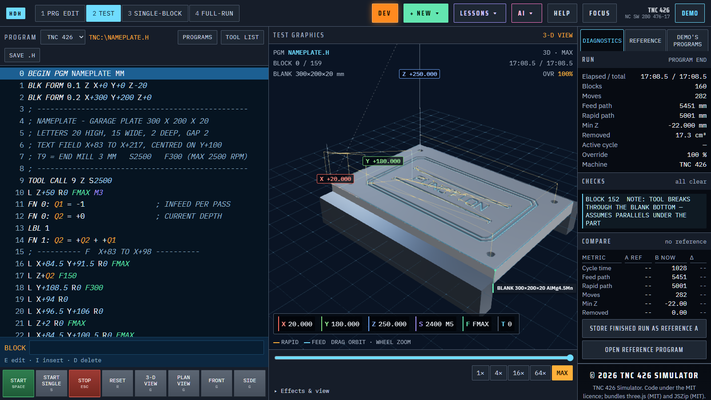
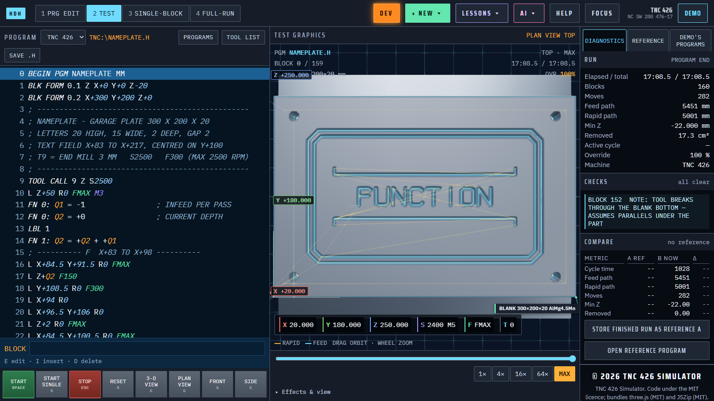
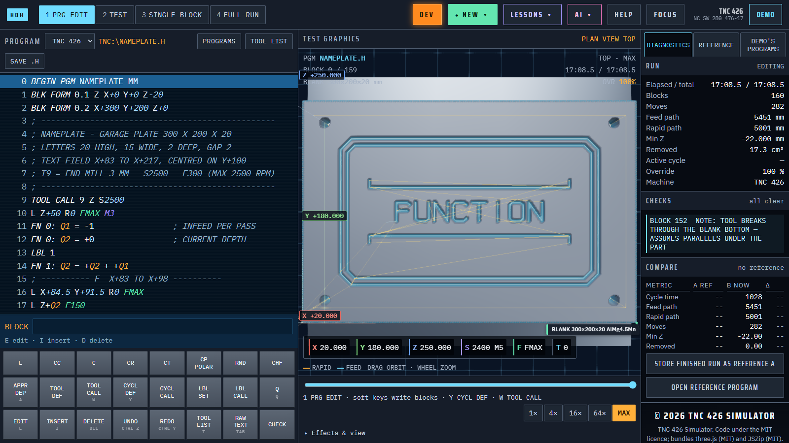
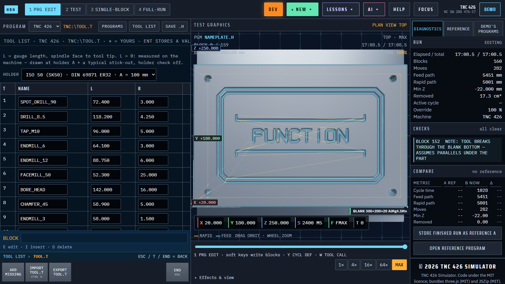

What it does
- One offline fileThe whole simulator is one HTML file. Open it in a browser; it needs no install and no network.
- The control's own errorsErrors land in the error register next to the block that caused them, worded the way the control words them.
- Material you can seeThe tool removes material from the blank in 3D, plan, front and side views, with cycle time, path lengths and removed volume.
- Soft keys, not syntaxIn PRG EDIT the soft keys build each block one question at a time, so you never type raw Klartext unless you want to.
- Compare two versionsStore a run as reference A, change the program, run again, and see the difference in time, paths, moves and volume.
- Cycles and probingDrilling, pockets, SL contour cycles, cycle 19 tilting on the 430 and touch-probe cycles run as the manual describes.
How it works

A finished run
The demo nameplate after a full run: the listing on the left, the cut part in the middle, time and paths on the right.

Plan view
Key G switches to the top view, with the engraved text and the tool path drawn over the part.

PRG EDIT
Key 1 opens program editing; the soft keys at the bottom write each block for you.

Tool table
Key T opens the tool table with each tool's name, length and radius, as TOOL.T holds them on the control.
Get it
Open the simulator in a browser, or download index.html from the repository and open it offline.
https://gigacook.github.io/tnc-sim/
Source and the full manual on GitHub